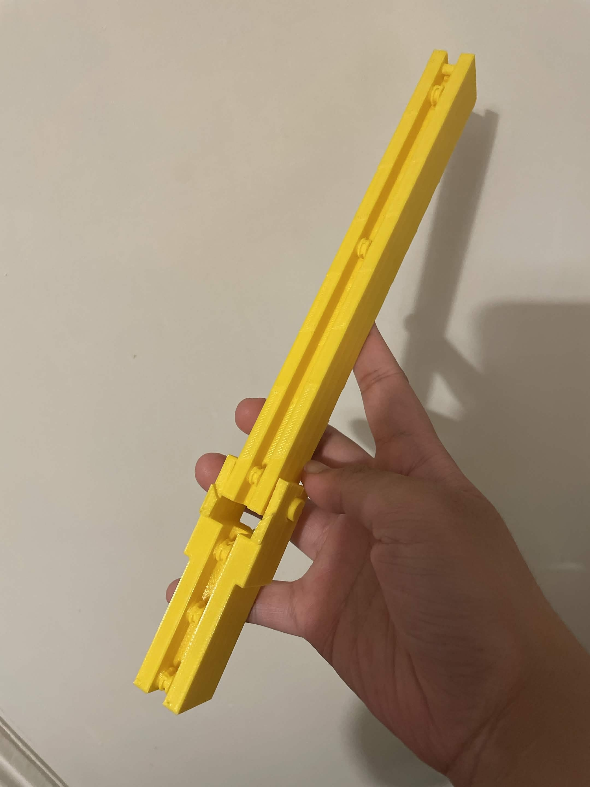
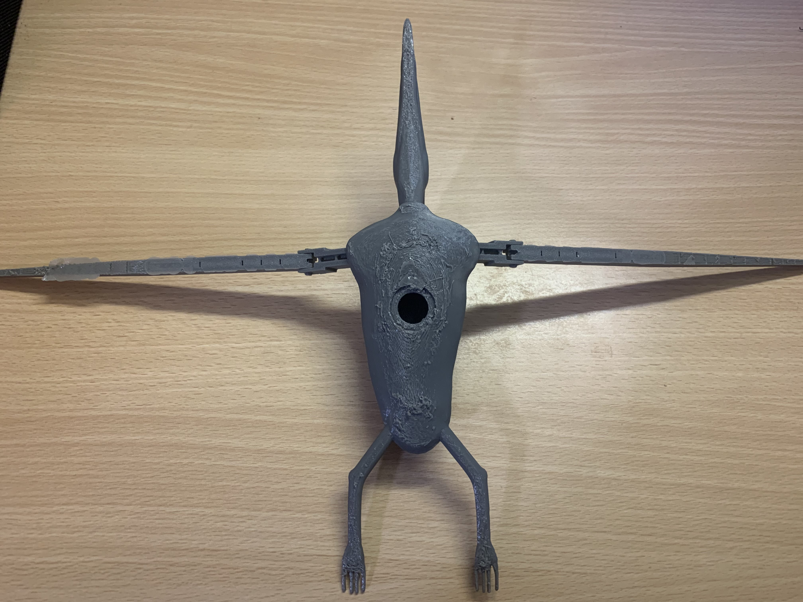

Preproduction
The preproduction stage is where the files made in the development stage were printed out. A member of the group contacted the 3d printing department about one of the arms, where a minor redesign was suggested. The rollers for the arm were printed in place so that they did not need to be attached later. The suggestion was that the rollers did not have enough clearance and would merge with the rest of the print, meaning they would not move and the design would have to be adjusted. After this redesign was approved the design was printed in PLA as it a prototype. After the print had finished it was found that the supports that were used could not be removed and the rollers didn’t rotate.

This led to another redesign, where the rollers were removed from the arm and would be added on later. This would hopefully ensure that they could rotate to let the rope move along them. During this print the design was printed on a different printer, so it was scaled down to 95%. A body was also scaled down to 95% and then printed so that the arms and body matched in scale. This design was fairly successful as the arms both moved and fit into the slot designed for them on the body. The main issue was that due to the way the model was designed it required many supports. These supports were difficult to remove, resulting in a very bad finish on the underside of the body. However, during final production this would likely be covered in silicone and not look as rough. The final prototype measured 28cm long with a 47cm wingspan.

